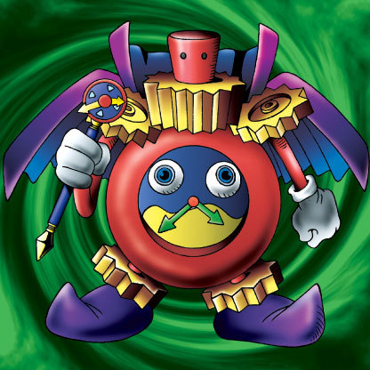

Time Wizard

Description: "When this card is flipped face-up, all DRAGON monsters with ATK less than 2400 are turned into Thousand Dragon."
STATS
ATK: 500
DEF: 400DECK COST
Deck Cost per Card: 14EFFECT IS IMPLEMENTED!
Fusion List (35 Possible Fusions)
- Time Wizard + B. Dragon Jungle King = Thousand Dragon
- Time Wizard + Baby Dragon = Thousand Dragon
- Time Wizard + Blackland Fire Dragon = Thousand Dragon
- Time Wizard + Bolt Penguin = The Immortal of Thunder
- Time Wizard + Bone Mouse = Magical Ghost
- Time Wizard + Crawling Dragon = Thousand Dragon
- Time Wizard + Dancing Elf = Mystical Elf
- Time Wizard + Darkfire Dragon = Thousand Dragon
- Time Wizard + Dragon Statue = Thousand Dragon
- Time Wizard + Electric Lizard = The Immortal of Thunder
- Time Wizard + Electric Snake = The Immortal of Thunder
- Time Wizard + Embryonic Beast = Summoned Skull
- Time Wizard + Fiend's Hand = Magical Ghost
- Time Wizard + Fire Reaper = Magical Ghost
- Time Wizard + Kaminarikozou = The Immortal of Thunder
- Time Wizard + Koumori Dragon = Thousand Dragon
- Time Wizard + LaLa Li-oon = The Immortal of Thunder
- Time Wizard + Lesser Dragon = Thousand Dragon
- Time Wizard + Mega Thunderball = The Immortal of Thunder
- Time Wizard + Mystic Lamp = Lord of the Lamp
- Time Wizard + One-Eyed Shield Dragon = Thousand Dragon
- Time Wizard + Petit Dragon = Thousand Dragon
- Time Wizard + Ryu-Ran = Thousand Dragon
- Time Wizard + Sea King Dragon = Thousand Dragon
- Time Wizard + Shadow Specter = Magical Ghost
- Time Wizard + Skull Servant = Magical Ghost
- Time Wizard + Spike Seadra = Thousand Dragon
- Time Wizard + Stone D. = Thousand Dragon
- Time Wizard + The 13th Grave = Magical Ghost
- Time Wizard + The Immortal of Thunder = Kaminari Attack
- Time Wizard + Three-Legged Zombies = Magical Ghost
- Time Wizard + Wicked Dragon with the Ersatz Head = Thousand Dragon
- Time Wizard + Yamadron = Thousand Dragon
- Time Wizard + Yamatano Dragon Scroll = Thousand Dragon
- Time Wizard + Zombie Warrior = Magical Ghost